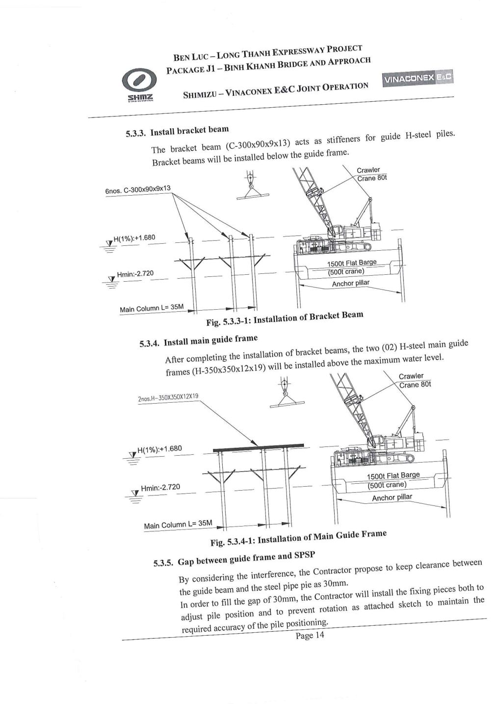
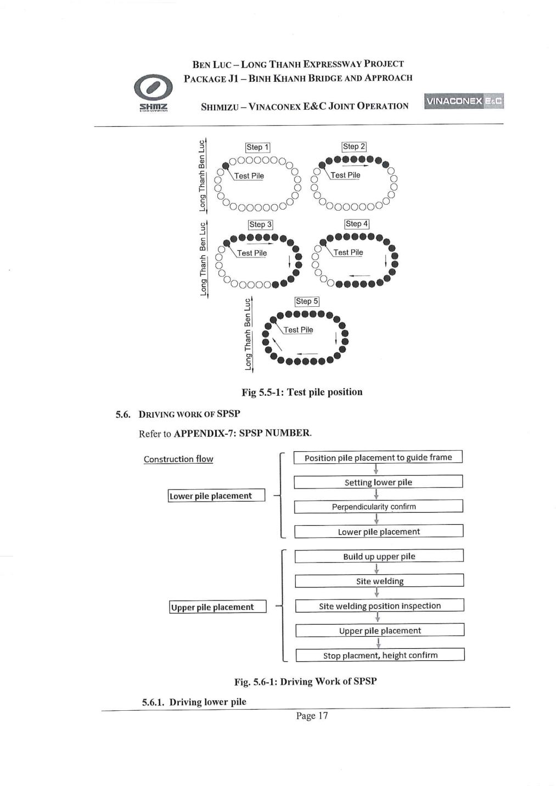
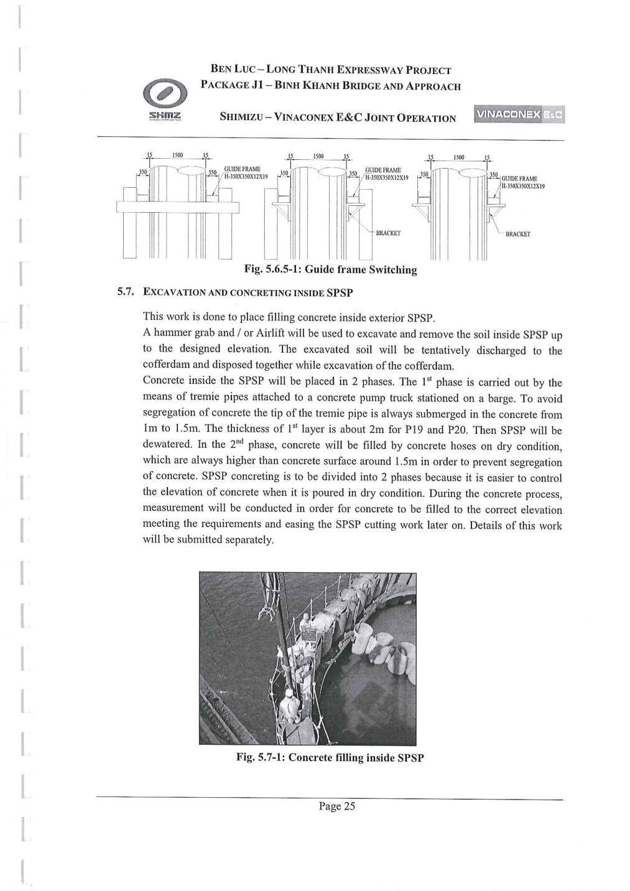
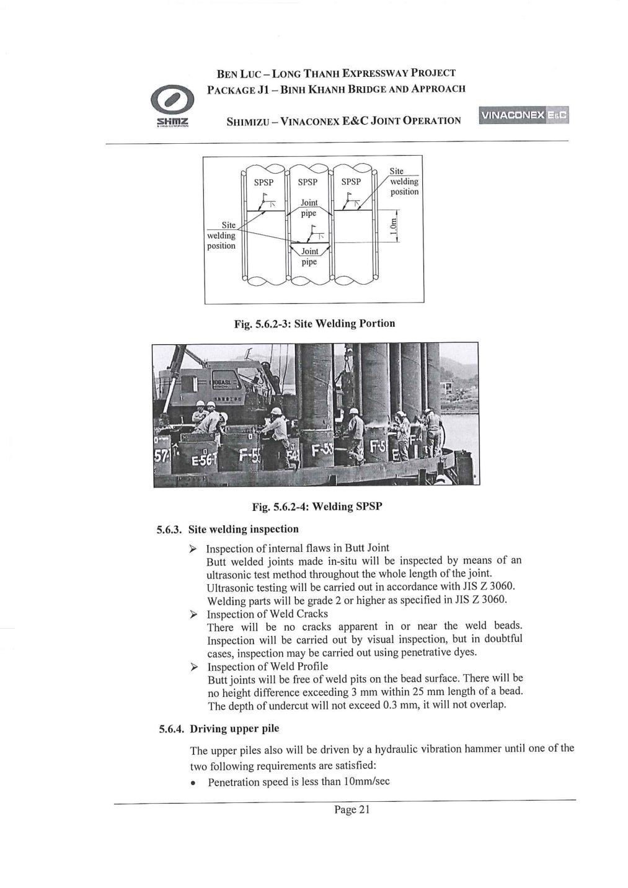
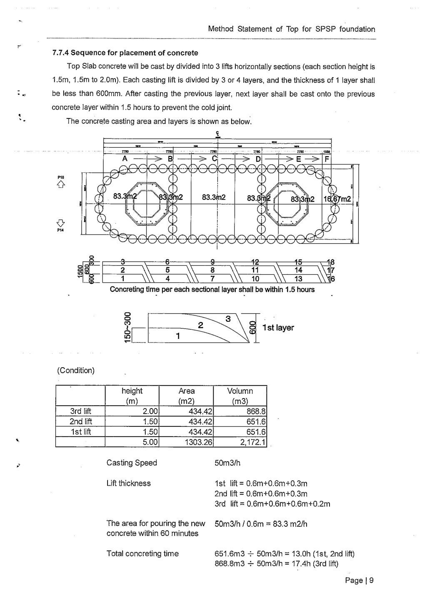
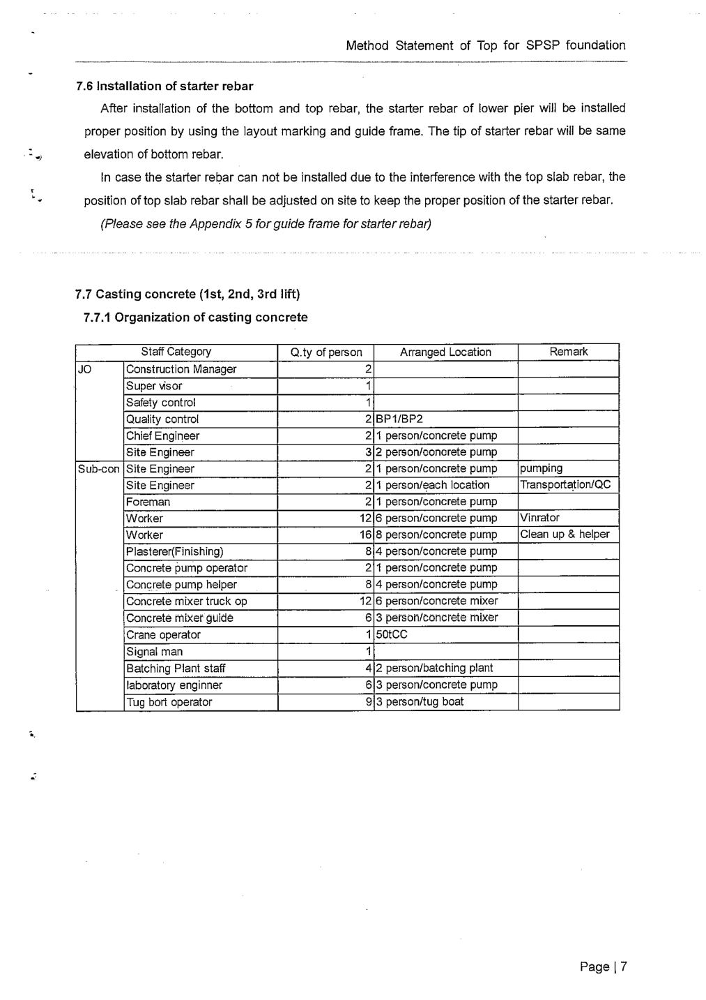
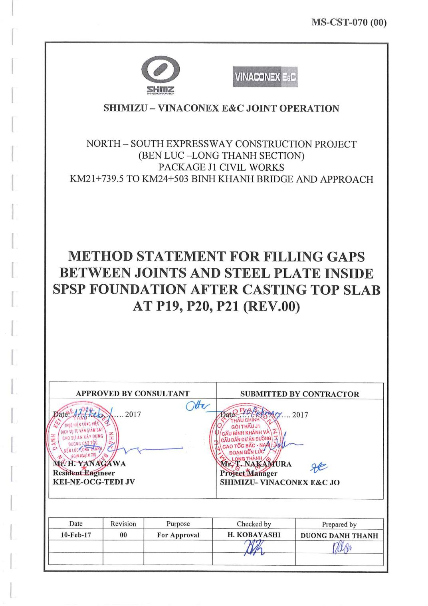
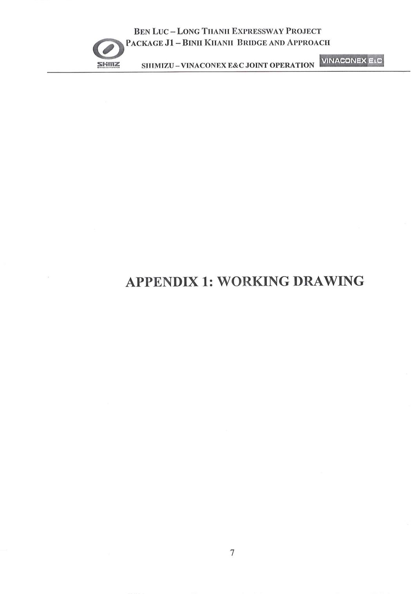

Cầu Bình Khánh & cầu dẫn — Bến Lức–Long Thành · Trụ P19 / P20 / P21 · Liên danh Shimizu – Vinaconex E&C ·
Tư vấn giám sát KEI–NE–OCG–TEDI. Tổng hợp từ 9 hồ sơ Method Statement đã duyệt.
§1
Chế tạo & vận chuyển cọc ống thép
Đảm bảo cọc ống thép được sản xuất đúng quy cách, bảo quản và vận chuyển an toàn từ nhà máy đến công trường mà không hư hỏng lớp sơn hay biến dạng kích thước trước khi hạ cọc.
Các bước thực hiện
Chế tạo tại nhà máy theo đường kính thiết kế (OD ~1500mm), chia thành đoạn dưới (lower pile) và đoạn trên (upper pile) để thuận tiện vận chuyển và nối tại công trường.
Hàn sẵn tai cẩu (lifting lug) ở đầu mỗi cọc để phục vụ cẩu lắp.
Xếp lớp trên bãi chứa, dùng gỗ kê giữa các lớp để tránh biến dạng và trầy xước lớp phủ chống gỉ.
Vận chuyển ra cảng bằng xe chuyên dụng, xếp lên xà lan (barge) để chở đến công trường bằng đường thủy.
Bốc xếp lên/xuống xà lan bằng cẩu bánh xích, công nhân dùng dây dẫn hướng (tag line) điều chỉnh hướng để tránh va đập.
Tại công trường, xếp tạm trên bãi/xà lan chờ trước khi đưa vào khung dẫn hướng (guide frame) để hạ cọc.
Nâng cọc từ xà lan/bãi chứa, đưa vào đúng vị trí trong khung dẫn hướng (guide frame) đã lắp sẵn, đảm bảo cọc thẳng đứng và đúng tọa độ trước khi hạ.
Các bước thực hiện
Lắp khung dẫn hướng trước: dầm công-xôn (C-300×90×9×13) làm gối đỡ, sau đó lắp khung dẫn hướng chính (H-350×350×12×19), thi công bằng cẩu bánh xích 80 tấn trên xà lan phẳng 1500 tấn, neo bằng trụ neo.
Khống chế khe hở 30mm giữa khung dẫn hướng và thân cọc; lắp miếng chêm (fixing pieces) giữ đúng vị trí, chống xoay.
Dùng cẩu bánh xích (60–80 tấn) móc cáp vào tai cẩu ở đầu cọc, cẩu cọc lên theo phương thẳng đứng.
Đưa cọc vào đúng ô định vị trên khung dẫn hướng, kiểm tra độ thẳng đứng bằng máy trắc đạc/thủy chuẩn.
Hạ cọc từ từ vào vị trí, giữ bằng khung dẫn hướng ở 2 cao độ trong khi chuẩn bị rung hạ.
Với cọc thử: đóng theo 5 bước xoay vòng quanh chu vi ô-van để xác định lực đóng phù hợp trước khi đại trà.
Thiết bị & vật liệu
Cẩu bánh xích 80 tấnXà lan phẳng 1500 tấnKhung dẫn hướng H-350×350×12×19Dầm công-xôn thép hình CTrụ neo 35m
Lưu ý kỹ thuật & an toàn
⚠Kiểm soát chặt chẽ khe hở 30mm giữa khung và cọc — các cọc phải khớp khít qua ống nối khi tạo vòng vây kín.
ℹTheo dõi liên tục độ thẳng đứng trong suốt quá trình hạ cọc để tránh nghiêng lệch tích lũy quanh chu vi ô-van.

Lắp dầm công-xôn và khung dẫn hướng (guide frame)

Trình tự đóng cọc thử (5 bước) và sơ đồ dòng công việc hạ cọc
Hạ toàn bộ hệ cọc ống thép xuống độ sâu thiết kế theo đúng trình tự — cọc dưới trước, cọc trên nối sau — để hình thành vòng vây ô-van kín, đảm bảo độ thẳng đứng và độ khít của các ống nối.
Các bước thực hiện
Hạ cọc dưới: định vị vào khung dẫn hướng → đặt cọc dưới → kiểm tra độ thẳng đứng → hạ bằng búa rung/búa ép đến cao độ quy định.
Lắp cọc trên: dựng lên đầu cọc dưới → hàn nối tại công trường (xem công đoạn 4) → kiểm tra vị trí mối hàn → tiếp tục hạ → dừng, kiểm tra cao độ hoàn thiện.
Thiết bị hạ cọc: búa rung thủy lực. Dừng khi tốc độ xuyên <10mm/giây hoặc đạt cao độ thiết kế.
Trình tự quanh chu vi ô-van: cọc thử trước, sau đó lan dần 2 hướng đối xứng để kiểm soát biến dạng tích lũy.
Khi hạ đến độ sâu nhất định, chuyển đổi độ cao khung dẫn hướng (guide frame switching) để tiếp tục dẫn hướng.
Kiểm tra chất lượng mối hàn nối cọc bằng siêu âm (UT) trước khi tiếp tục hạ, đạt grade 2 trở lên theo JIS Z 3060.
Thiết bị & vật liệu
Búa rung thủy lựcCẩu bánh xích 80 tấnKhung dẫn hướng H-350×350×12×19Máy siêu âm kiểm tra mối hàn (UT)
Lưu ý kỹ thuật & an toàn
⚠Không được để mối hàn nối có vết nứt. Undercut ≤0.3mm, chênh cao bead ≤3mm/25mm.
ℹGiám sát biến dạng và độ nghiêng liên tục trong suốt quá trình rung hạ để hiệu chỉnh kịp thời.

Chuyển đổi độ cao khung dẫn hướng khi hạ cọc sâu dần

Sơ đồ vị trí mối hàn công trường và thi công thực tế trên xà lan
Nguồn: J1-SVJO-ENG-2016-0552, mục 5.6, tr.17–22.
§4
Nối cọc (Splicing)
Cọc ống thép SPSP quá dài để vận chuyển và hạ nguyên đoạn, nên được chia thành đoạn dưới/trên và nối bằng hàn giáp mí tại công trường trước khi tiếp tục hạ.
Các bước thực hiện
Nhấc đoạn cọc trên vào đúng vị trí tâm, chồng khít lên đầu cọc dưới.
Căn chỉnh hai đầu cọc bằng thanh căn/kẹp định vị tạm, đảm bảo đồng tâm, khe hở đều.
Dựng giàn giáo quanh vị trí mối nối để thợ hàn tiếp cận toàn bộ chu vi ống.
Hàn đính cố định tạm, sau đó hàn hoàn thiện toàn chu vi bằng hàn hồ quang nhiều lớp.
Bố trí vị trí mối hàn lệch tối thiểu 1.0m giữa các ống liền kề.
Kiểm tra: siêu âm 100% chiều dài theo JIS Z 3060, kiểm tra vết nứt, kiểm tra hình dạng bead hàn.
Khuyết tật nghiêm trọng → hàn sửa nhiều lớp, mài bỏ xỉ hàn sau khi hoàn thành.
Sau khi mối hàn đạt yêu cầu, tiếp tục hạ cọc trên bằng búa rung.
Thiết bị & vật liệu
Máy hàn hồ quangGiàn giáo thao tác quanh ốngMáy siêu âm kiểm tra mối hàn (UT)
Lưu ý kỹ thuật & an toàn
⚠Kiểm tra 100% chiều dài mối hàn bằng siêu âm trước khi cho phép tiếp tục thi công — đây là mối nối chịu lực chính của cọc.
Cẩu bánh xích 80 tấnXà lan 400–1360 tấnXe bơm bê tông di độngĐầm dùi
Lưu ý kỹ thuật & an toàn
⚠Kiểm soát thời gian giữa các lớp đổ ≤1.5 giờ; cần phân tích ứng suất nhiệt riêng do khối tích lớn dễ sinh nhiệt thủy hóa cao.
ℹHồ sơ minh họa (734/MS-16-734) tham chiếu trụ P15/gói J3 — phương pháp luận tương tự J1 nhưng số liệu cụ thể không đại diện cho P19/P20/P21.

Phân chia khu vực và trình tự đổ bê tông 3 lớp

Mặt bằng bố trí lưới thép và chi tiết con kê bê tông
Nguồn: MS Top Slab 734/MS-16-734 (81 trang, tham chiếu P15/J3); J1-SVJO-ENG-2016-0552, mục 5.16, tr.47.
§9
Lấp khe hở giữa các mối nối sau khi đổ bản đỉnh
Sau khi đổ xong bản đỉnh, khe hở còn lại giữa ống nối SPSP và tấm thép gia cường được lấp kín bằng vữa, tránh nước xâm nhập về sau và tăng độ cứng tổng thể.
Các bước thực hiện
Vệ sinh khe hở: dùng bơm áp lực nước kết hợp khí nén (đến 10MPa) xối rửa đất/cát còn sót đến độ sâu yêu cầu.
Lắp ống bơm vữa vào khe hở, bơm từ đáy lên, đầu ống luôn ngập trong vữa.
Bơm liên tục cho đến khi vữa dâng đến cao độ mặt bản đỉnh, sau đó chuyển sang ống kế tiếp.
Vữa sử dụng: cường độ tối thiểu 30MPa (PCB40 1445kg/m³, nước 530L, phụ gia Basf, cường độ 28 ngày ≥35MPa).
⚠Vữa phải được thử nghiệm (trial mix) và tư vấn giám sát chấp thuận trước khi sử dụng đại trà.

Hồ sơ MS lấp khe hở giữa mối nối và tấm thép sau khi đổ bản đỉnh
Nguồn: MS Filling Gap J1-SVJO-ENG-2017-1292 (Rev.00, 19 trang), mục 1–4, tr.2–5.
§10
Xử lý chống thấm / rò rỉ nước tại khe nối
Trong thi công khô bên trong cofferdam, nước có thể rò rỉ qua khe nối cọc hoặc đáy bản dưới; phải thu gom và bơm thoát ra ngoài để duy trì điều kiện khô ráo.
Các bước thực hiện
A. Khe nối cọc — ngoài: thợ lặn dùng vật liệu bông + xi măng đông kết nhanh bịt tạm từ ngoài vòng vây.
A. Khe nối cọc — trong (khô): hàn tấm thép 5mm áp sát vị trí rò rỉ, hàn ống Ø49 dẫn nước về hố thu, lắp bơm bơm ra ngoài.
Lấp bê tông giữa tấm thép và SPSP sau khi hoàn tất hàn thép chờ & bản đỉnh (C30/C35 tùy độ khô/rộng khe).
B. Đáy bản dưới: lắp ống PVC Ø90 đứng dẫn nước lên, đổ bê tông C20 xung quanh, nối ống ngang về hố thu.
C. Mương thu nước: lắp ống PVC Ø25, nước chảy về khe đã hàn tấm thép → bơm nhỏ → bơm áp lực cao ra sông, tự động theo phao mực nước.
Thiết bị & vật liệu
Tấm thép 5mmỐng thép Ø49 / PVC Ø90, Ø25Bơm tự động theo phao mực nước
Lưu ý kỹ thuật & an toàn
⚠Số lượng và vị trí tấm thép hàn phụ thuộc thực tế điểm rò rỉ quan sát được — không cố định trước.
ℹToàn bộ hệ bơm cần vận hành tự động (bật/tắt theo phao) để tránh ngập úng khi không có người trực.

Chi tiết hệ thống thu và bơm thoát nước rò rỉ ra sông (Detail B)
Nguồn: MS Water Leakage J1-SVJO-ENG-2017-1257 (Rev.01, 22 trang), mục 1–4, Appendix 1.
§11
Chống gỉ sau khi cắt tai cẩu
Sau khi cọc được hạ đúng vị trí, tai cẩu hàn ở đáy cọc dưới không còn cần thiết và được cắt bỏ; bề mặt thép bị cắt cần xử lý chống gỉ.
Các bước thực hiện
Sau khi cọc dưới đặt đúng vị trí, cắt bỏ tai cẩu bằng phương pháp cắt hơi (gas cutting).
Vị trí cắt: cách bề mặt thân cọc SPSP khoảng 2cm — không cắt sát mép.
Xử lý bề mặt sau khi cắt: phun kẽm (Zinc Spray) ngăn ngừa gỉ sét phát triển.
Thiết bị & vật liệu
Thiết bị cắt hơi (gas cutting set)Vật liệu phun kẽm (Zinc Spray)
Lưu ý kỹ thuật & an toàn
ℹĐề xuất ngắn của nhà thầu — chủ yếu bảo vệ trong giai đoạn thi công trước khi bê tông bao bọc hoàn toàn.
Chưa có ảnh minh họa riêng cho công đoạn này.
Nguồn: “Proposal for prevention of the rusting after cutting off lifting lug” — toàn văn 1 trang nội dung.
§12
Biện pháp an toàn & kiểm soát chất lượng tổng thể
Đảm bảo toàn bộ quá trình thi công SPSP được kiểm soát an toàn lao động và chất lượng kỹ thuật theo tiêu chuẩn dự án.
Các bước thực hiện
PPE đầy đủ; kiểm tra điện/bơm/máy hàn trước mỗi ca; người tín hiệu trực từ đỉnh đến đáy SPSP.
An toàn lặn: tối đa 2 giờ/thợ/ngày, giảm áp theo TCVN 5585:1991 và US Navy Table 9-8.
Kiểm tra mối hàn: siêu âm 100% chiều dài (JIS Z 3060, grade 2+); kiểm tra nứt, hình dạng bead.
Thử uốn & kéo hàng ngày với thép chờ tại phòng thí nghiệm độc lập bên thứ ba.
Kiểm tra vật liệu: chứng chỉ chất lượng cho thép cọc, thép chờ, thép tấm.
Đo cao độ đáy đào/lớp cát/bê tông bằng máy đo dưới nước tại mỗi phân khu.
Nghiệm thu từng bước (hold point) khi thi công bản đỉnh.
Phân tích ứng suất nhiệt riêng cho bê tông khối lớn; quan trắc tốc độ xuyên khi rung hạ cọc.
Lưu ý kỹ thuật & an toàn
⚠Không tìm thấy đề cập PDA test (Pile Driving Analyzer) trong hồ sơ đã đọc — cần xác nhận thêm nếu dự án có áp dụng.
Chưa có ảnh minh họa riêng cho công đoạn này.
Nguồn: J1-SVJO-ENG-2016-0552; MS Sand layer, Stud welding, Top slab, Filling Gap, Water Leakage — mục Safety/QC.